← 返回阅读库 · 原论文目录
论文讲解阅读文档 · 论文精读 · v214
CVPR 2026最佳论文提名 Mapping Networks
视频时长 00:10:50；讲解文字 3,561 字符；提取讲解画面 222 张。按视频原顺序阅读，每段文字保留时间戳。
文字来自整段视频的自动语音转写，按自然停顿分段，并与 PPT / 论文页面 / 演示画面对齐。未将讲解压缩为摘要；术语、数字和口述公式请结合画面及原论文核对。 阅读稿已校正规范部分明确术语误识别；原始逐字稿和每处修改记录另行保留。
讲解画面为源视频截图（638×360），不是可编辑 PPT 文件。全片按每秒 2 帧扫描内容变化，逐步展开页保留；连续动画保留代表画面。清晰度受源视频限制。
下载完整资料包 · 含离线 HTML、PDF、Word、全部 PPT 画面和字幕。
原论文与材料
Mapping Networks · 下载完整 PDF（10 页）
按时间阅读
00:00:00–00:00:04 · 画面 001
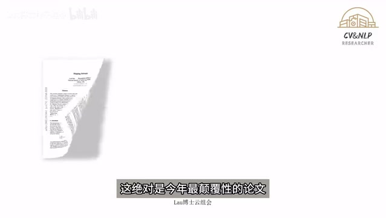
00:00:00–00:00:04 · 画面 001这绝对是今年最颠覆性的论文，作者是两名印度老哥，冲进了 CVPR 最佳论文决赛圈。他推翻了模型压缩领域多年的固有思路，不用剪枝 ，不用 LoRA 微调，只优化几千维的隐向量训练参数，压缩 500 倍 ，精度反而更高。不少研究者评价这篇工作重新定义了神经网络参数优化的底层逻辑。同学们 ，欢迎来到影组会论文精读系列 ，极致轻量化 Mapping Networks。
00:00:04–00:00:05 · 画面 002
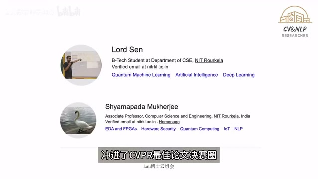
00:00:04–00:00:05 · 画面 00200:00:05–00:00:09 · 画面 003
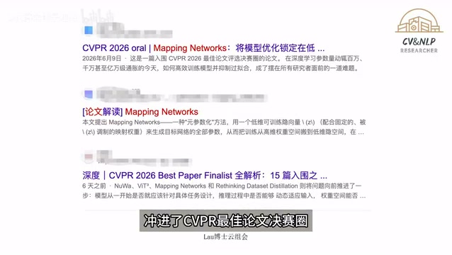
00:00:05–00:00:09 · 画面 00300:00:09–00:00:13 · 画面 004
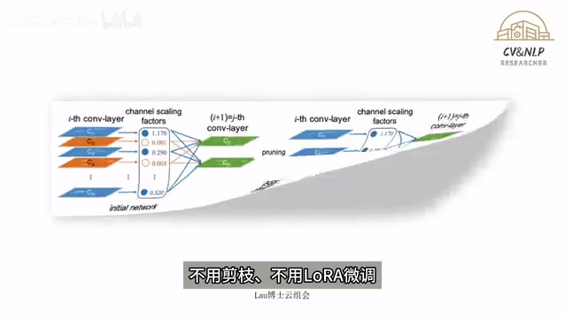
00:00:09–00:00:13 · 画面 00400:00:13–00:00:14 · 画面 005
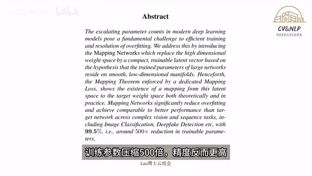
00:00:13–00:00:14 · 画面 00500:00:14–00:00:17 · 画面 006
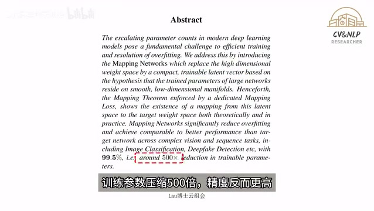
00:00:14–00:00:17 · 画面 00600:00:17–00:00:21 · 画面 007
00:00:17–00:00:21 · 画面 00700:00:21–00:00:23 · 画面 008
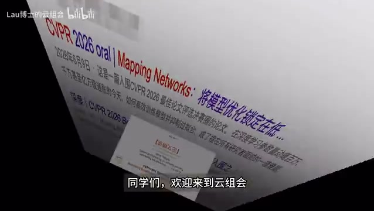
00:00:21–00:00:23 · 画面 00800:00:23–00:00:27 · 画面 009
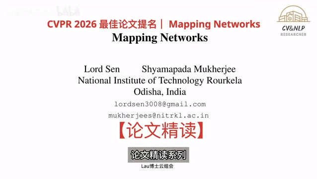
00:00:23–00:00:27 · 画面 00900:00:27–00:00:31 · 画面 010
00:00:27–00:00:31 · 画面 01000:00:31–00:00:33 · 画面 011
00:00:31–00:00:33 · 画面 01100:00:33–00:00:34 · 画面 012
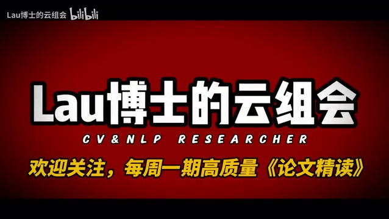
00:00:33–00:00:34 · 画面 01200:00:34–00:00:37 · 画面 013
00:00:34–00:00:37 · 画面 01300:00:37–00:00:39 · 画面 014
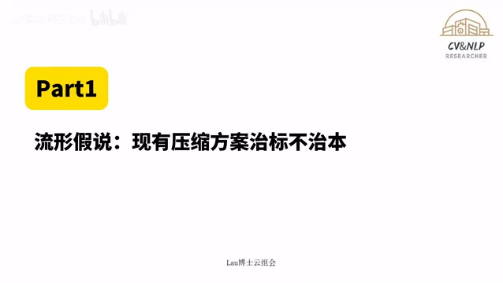
00:00:37–00:00:39 · 画面 014六博士说到做到，又来更新今年 CVPR 有意思的论文了。接下来应该会开根呼声很高的 ICML 和 ECCV 的最新研究，感兴趣可以点个关注。OK ，进入正题，先抛出本文要解决的问题，现在的深度学习模型参数越做越大。
00:00:39–00:00:40 · 画面 015
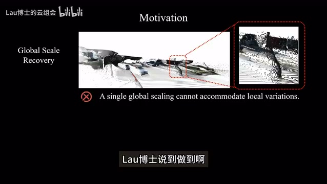
00:00:39–00:00:40 · 画面 01500:00:40–00:00:42 · 画面 016
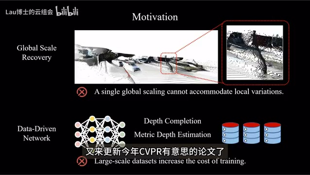
00:00:40–00:00:42 · 画面 01600:00:42–00:00:46 · 画面 017
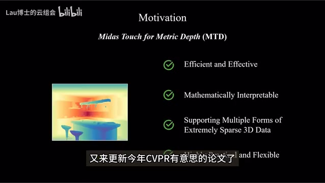
00:00:42–00:00:46 · 画面 01700:00:46–00:00:47 · 画面 018
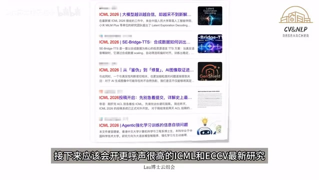
00:00:46–00:00:47 · 画面 01800:00:47–00:00:50 · 画面 019
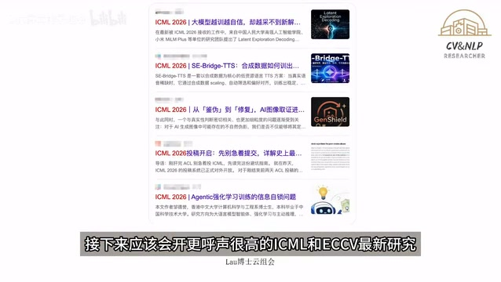
00:00:47–00:00:50 · 画面 01900:00:50–00:00:54 · 画面 020
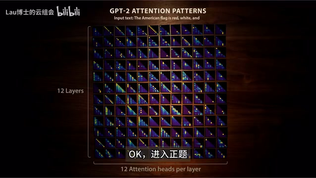
00:00:50–00:00:54 · 画面 02000:00:54–00:00:55 · 画面 021
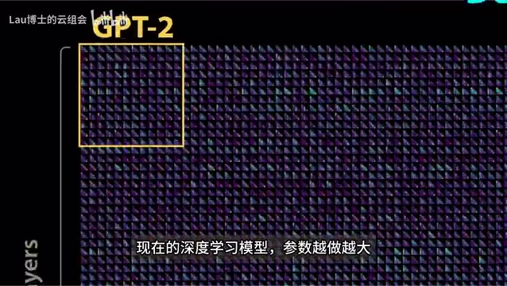
00:00:54–00:00:55 · 画面 02100:00:55–00:00:59 · 画面 022
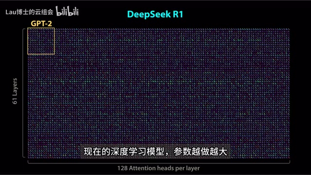
00:00:55–00:00:59 · 画面 022小到几十万参数的 CNN，大到几千万、上万亿的大模型，训练起来又慢又费卡，还容易过拟合。解决这个问题有两条路：一是堆显卡，分布式训练，靠硬件硬扛，依靠 Scaling Law，大力出奇迹；二是想办法减少可训练参数，比如剪枝、量化、低秩分解、彩票假说，这才是资本的方向。
00:00:59–00:01:03 · 画面 023
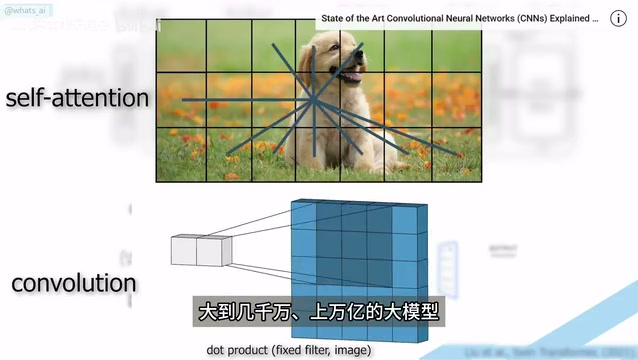
00:00:59–00:01:03 · 画面 02300:01:03–00:01:07 · 画面 024
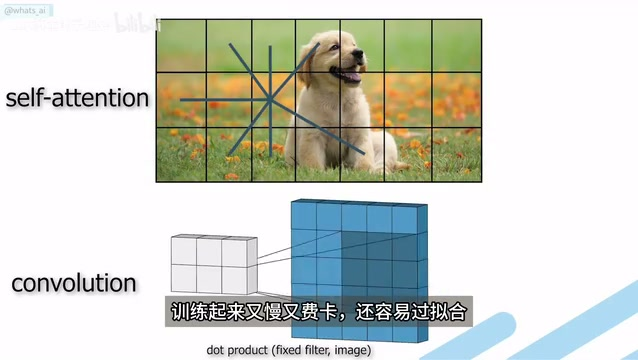
00:01:03–00:01:07 · 画面 02400:01:07–00:01:11 · 画面 025
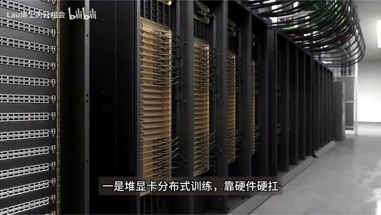
00:01:07–00:01:11 · 画面 02500:01:11–00:01:12 · 画面 026
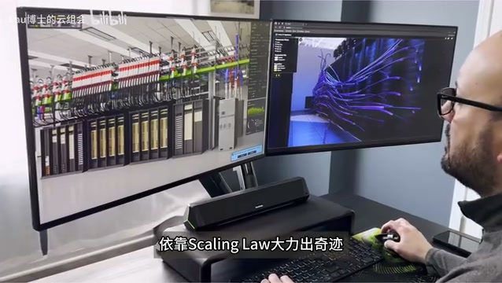
00:01:11–00:01:12 · 画面 02600:01:12–00:01:13 · 画面 027
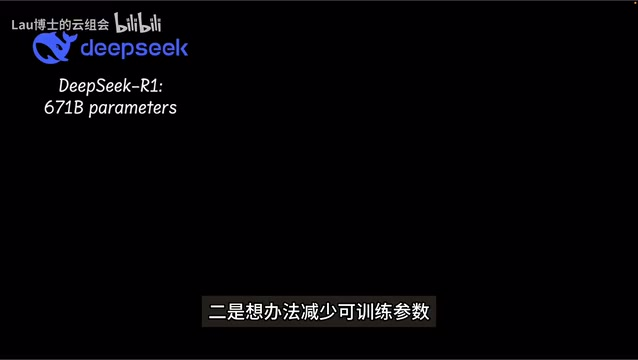
00:01:12–00:01:13 · 画面 02700:01:13–00:01:16 · 画面 028
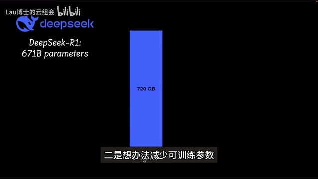
00:01:13–00:01:16 · 画面 02800:01:16–00:01:18 · 画面 029
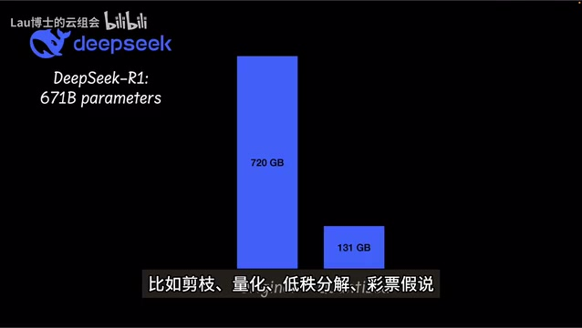
00:01:16–00:01:18 · 画面 02900:01:18–00:01:20 · 画面 030
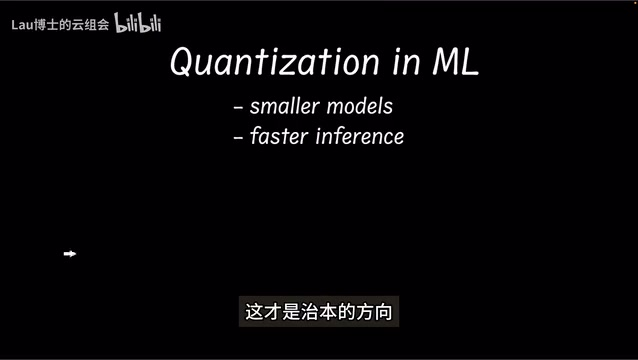
00:01:18–00:01:20 · 画面 030我们直接看论文的第一张图作者把所有参数压缩的方法分成了四大类左上训练完再压缩比如剪枝量化先完整的训练完百万参数再事后删掉没用的训练阶段算力一点没省右上训练中加约束比如低秩分解还是直接操作原始的高维权重只是给权重加了限制右下外部生成权重
00:01:20–00:01:24 · 画面 031
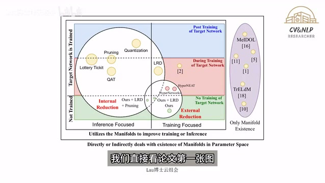
00:01:20–00:01:24 · 画面 03100:01:24–00:01:25 · 画面 032
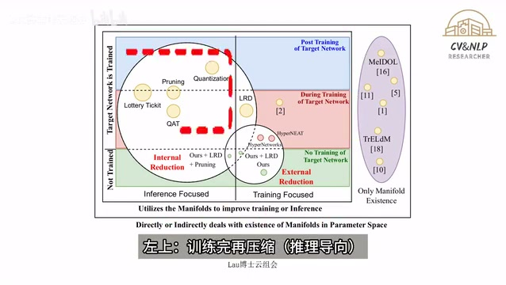
00:01:24–00:01:25 · 画面 03200:01:25–00:01:27 · 画面 033
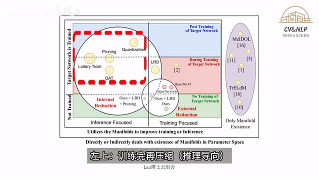
00:01:25–00:01:27 · 画面 03300:01:27–00:01:32 · 画面 034
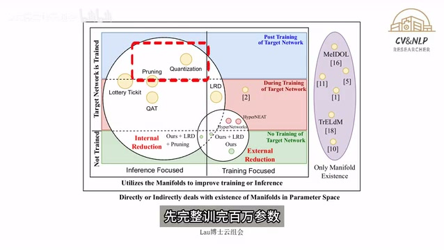
00:01:27–00:01:32 · 画面 03400:01:32–00:01:35 · 画面 035
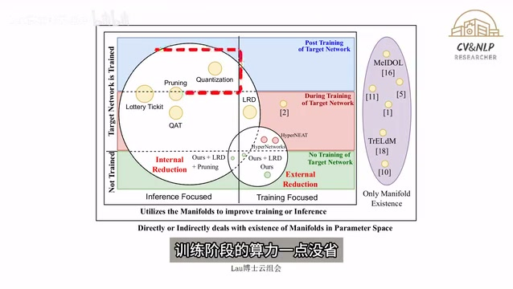
00:01:32–00:01:35 · 画面 03500:01:35–00:01:36 · 画面 036
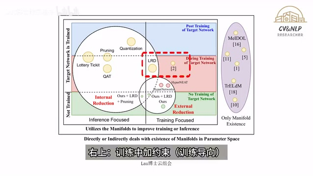
00:01:35–00:01:36 · 画面 03600:01:36–00:01:41 · 画面 037
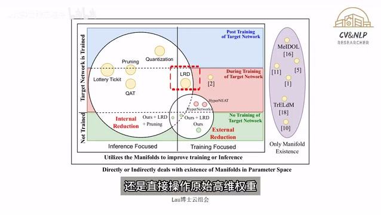
00:01:36–00:01:41 · 画面 03700:01:41–00:01:42 · 画面 038
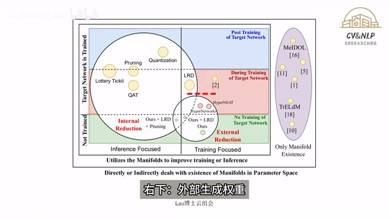
00:01:41–00:01:42 · 画面 03800:01:42–00:01:47 · 画面 039
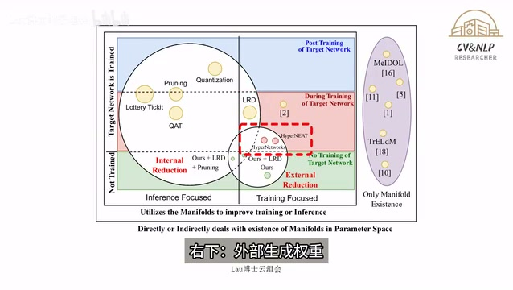
00:01:42–00:01:47 · 画面 039比如超网络用一个小网络生成大网络的权重但问题是两网络要一起训还是要不开高维参数优化而 Mapping Network 站在了一个独一无二的位置目标的大网络全程不参与训练从头到尾只优化一个极低维度的隐向量这个思路来自一个我们幼儿园大班学过的理论流形假设那关于流形假设呢六博士在之前何恺明老师那期云组会详细介绍了目前全网已经几百万播放了
00:01:47–00:01:48 · 画面 040
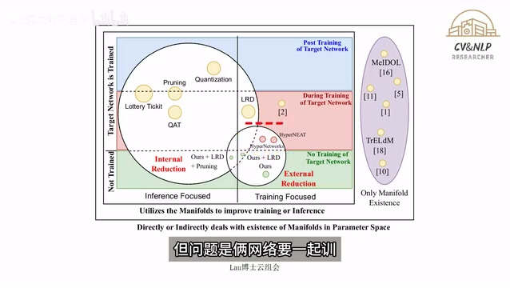
00:01:47–00:01:48 · 画面 04000:01:48–00:01:52 · 画面 041
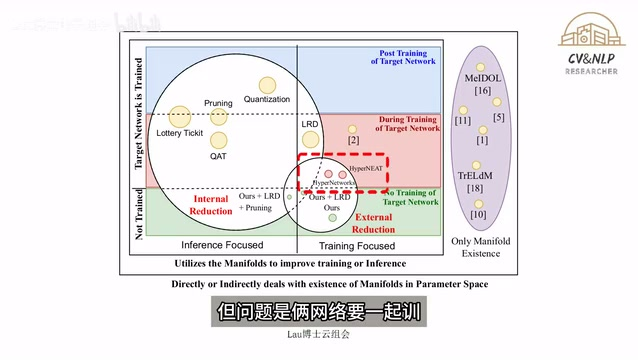
00:01:48–00:01:52 · 画面 04100:01:52–00:01:57 · 画面 042
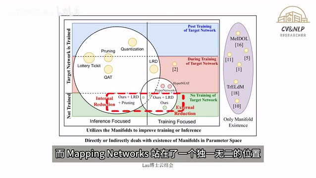
00:01:52–00:01:57 · 画面 04200:01:57–00:01:58 · 画面 043
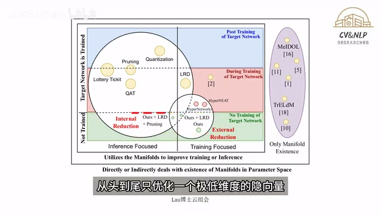
00:01:57–00:01:58 · 画面 04300:01:58–00:02:02 · 画面 044
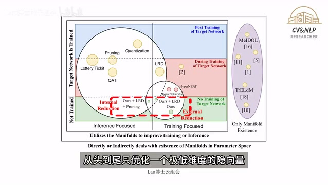
00:01:58–00:02:02 · 画面 04400:02:02–00:02:06 · 画面 045
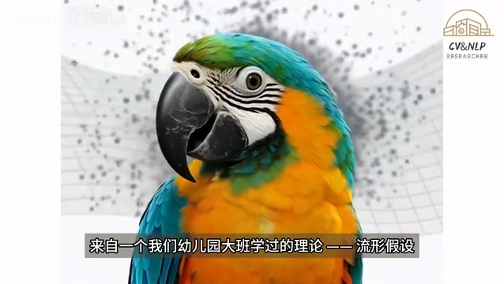
00:02:02–00:02:06 · 画面 04500:02:06–00:02:08 · 画面 046
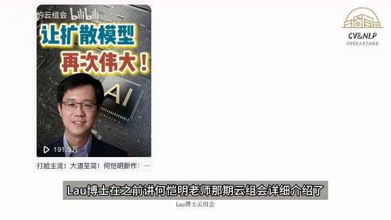
00:02:06–00:02:08 · 画面 04600:02:08–00:02:14 · 画面 047
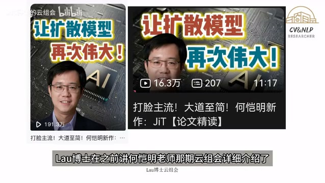
00:02:08–00:02:14 · 画面 047感兴趣的同学关注后自己去搜对于这篇论文而言我们可以简单的理解为高维的图片数据实际都分布在一个低维的光滑曲面上
00:02:14–00:02:15 · 画面 048
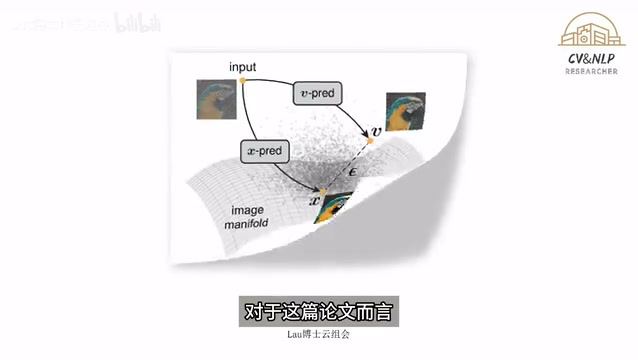
00:02:14–00:02:15 · 画面 04800:02:15–00:02:23 · 画面 049
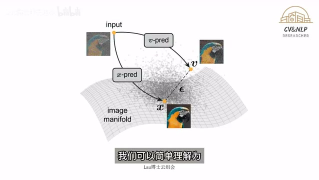
00:02:15–00:02:23 · 画面 049因此作者就提出了一个关键问题神经网络的权重参数是不是也符合这个规律为了验证这个猜想作者做了一个很直观的实验他在 MNIST 上训练了一个小 CNN 把每一轮每层的参数都保存下来用 PCA 和 t-SNE 降维画出来左边是 PCA 投影右边是 t-SNE 投影大家很清楚的看到每一层的参数更新轨迹
00:02:23–00:02:24 · 画面 050
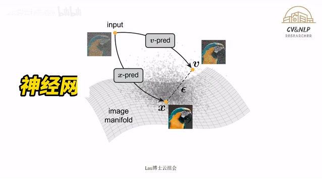
00:02:23–00:02:24 · 画面 05000:02:24–00:02:28 · 画面 051
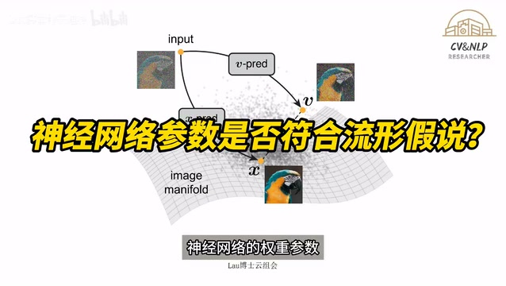
00:02:24–00:02:28 · 画面 05100:02:28–00:02:35 · 画面 052
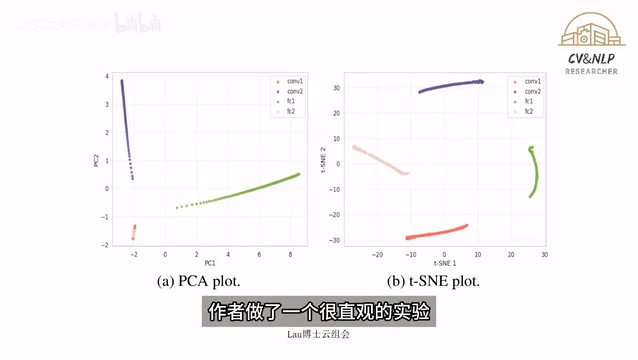
00:02:28–00:02:35 · 画面 05200:02:35–00:02:36 · 画面 053
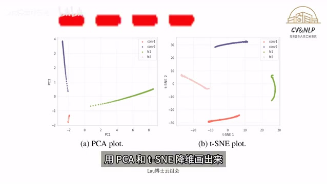
00:02:35–00:02:36 · 画面 05300:02:36–00:02:39 · 画面 054
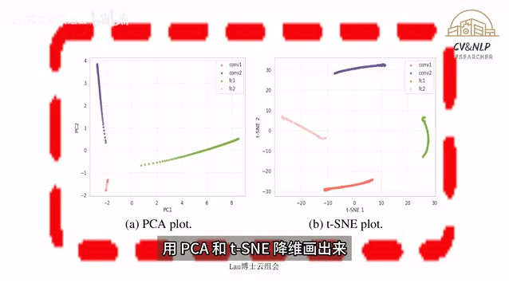
00:02:36–00:02:39 · 画面 05400:02:39–00:02:41 · 画面 055
00:02:39–00:02:41 · 画面 05500:02:41–00:02:42 · 画面 056
00:02:41–00:02:42 · 画面 05600:02:42–00:02:44 · 画面 057
00:02:42–00:02:44 · 画面 05700:02:44–00:02:48 · 画面 058
00:02:44–00:02:48 · 画面 058都是一条独立、光滑的曲线，根本没有在整个百万维空间里乱跳。神经网络训练好的最优权重，根本不是闪落在高维空间里的随机点，而是全部落在一个维度极低、光滑连续的曲面上。那既然最优权重在这个低维曲面上，我们为什么还要费劲去优化几百万个参数？直接在低维空间里找最优解，再映射回高维权重空间不就行了？这就是 Mapping Networks 的全部核心逻辑。
00:02:48–00:02:53 · 画面 059
00:02:48–00:02:53 · 画面 05900:02:53–00:02:55 · 画面 060
00:02:53–00:02:55 · 画面 06000:02:55–00:02:59 · 画面 061
00:02:55–00:02:59 · 画面 06100:02:59–00:03:00 · 画面 062
00:02:59–00:03:00 · 画面 06200:03:00–00:03:05 · 画面 063
00:03:00–00:03:05 · 画面 06300:03:05–00:03:06 · 画面 064
00:03:05–00:03:06 · 画面 06400:03:06–00:03:11 · 画面 065
00:03:06–00:03:11 · 画面 06500:03:11–00:03:14 · 画面 066
00:03:11–00:03:14 · 画面 06600:03:14–00:03:15 · 画面 067
00:03:14–00:03:15 · 画面 067当然光有猜想不够作者给出了严格的数学证明也就是映射定理这里我就不讲复杂的微分几何证明了只说结论保证同学们都能听懂简单说从数学上看只要神经网络满足以下公式中最基础的几个条件一 权重小幅变化网络输出不会剧烈跳变
00:03:15–00:03:25 · 画面 068
00:03:15–00:03:25 · 画面 06800:03:25–00:03:30 · 画面 069
00:03:25–00:03:30 · 画面 06900:03:30–00:03:31 · 画面 070
00:03:30–00:03:31 · 画面 07000:03:31–00:03:35 · 画面 071
00:03:31–00:03:35 · 画面 071二 输出小幅变化损失值不会剧烈跳变同时 权重曲面是平滑没有尖锐折角的那么就一定存在一个低维的映射函数能用极小维度的隐向量生成和全参数最优权重几乎一模一样的结果控制误差在 epsilon 一类也就是说用低维的隐向量替代高维权重训练理论上完全可行同时作者还进一步证明了本文设计的固定权重加加性调制的架构
00:03:35–00:03:36 · 画面 072
00:03:35–00:03:36 · 画面 07200:03:36–00:03:39 · 画面 073
00:03:36–00:03:39 · 画面 07300:03:39–00:03:42 · 画面 074
00:03:39–00:03:42 · 画面 07400:03:42–00:03:43 · 画面 075
00:03:42–00:03:43 · 画面 07500:03:43–00:03:48 · 画面 076
00:03:43–00:03:48 · 画面 07600:03:48–00:03:49 · 画面 077
00:03:48–00:03:49 · 画面 07700:03:49–00:03:51 · 画面 078
00:03:49–00:03:51 · 画面 07800:03:51–00:03:53 · 画面 079
00:03:51–00:03:53 · 画面 07900:03:53–00:03:58 · 画面 080
00:03:53–00:03:58 · 画面 08000:03:58–00:04:02 · 画面 081
00:03:58–00:04:02 · 画面 08100:04:02–00:04:06 · 画面 082
00:04:02–00:04:06 · 画面 082刚好就是满足这个定理的一种实现理论大概过了一下接下来是最激动人心的实现环节论文提出的 Mapping Networks 架构非常简单核心三件事一个可训练的隐向量一套固定的映射网络一个生成权重的目标网络
00:04:06–00:04:07 · 画面 083
00:04:06–00:04:07 · 画面 08300:04:07–00:04:08 · 画面 084
00:04:07–00:04:08 · 画面 08400:04:08–00:04:15 · 画面 085
00:04:08–00:04:15 · 画面 08500:04:15–00:04:16 · 画面 086
00:04:15–00:04:16 · 画面 08600:04:16–00:04:18 · 画面 087
00:04:16–00:04:18 · 画面 08700:04:18–00:04:20 · 画面 088
00:04:18–00:04:20 · 画面 08800:04:20–00:04:22 · 画面 089
00:04:20–00:04:22 · 画面 08900:04:22–00:04:24 · 画面 090
00:04:22–00:04:24 · 画面 090整个模型里只有这个长度为低的向量是可训练的低一般就几百到几千维所有的梯度反向传播最后只更新这个小向量目标的大网络的权重全程固定不参与训练这也是它和传统超网络最本质的区别
00:04:24–00:04:28 · 画面 091
00:04:24–00:04:28 · 画面 09100:04:28–00:04:30 · 画面 092
00:04:28–00:04:30 · 画面 09200:04:30–00:04:34 · 画面 093
00:04:30–00:04:34 · 画面 09300:04:34–00:04:36 · 画面 094
00:04:34–00:04:36 · 画面 09400:04:36–00:04:40 · 画面 095
00:04:36–00:04:40 · 画面 09500:04:40–00:04:42 · 画面 096
00:04:40–00:04:42 · 画面 096映射网络本身的权重是正交初始化全程固定时绝对不训练那怎么让它有表达能力靠隐向量 Z 去做加性调制给映射网络的每个权重加上一点点隐向量对应维度的数值为什么要这么设计直接训练映射网络不行吗后面的消融实验会告诉大家不行
00:04:42–00:04:47 · 画面 097
00:04:42–00:04:47 · 画面 09700:04:47–00:04:49 · 画面 098
00:04:47–00:04:49 · 画面 09800:04:49–00:04:50 · 画面 099
00:04:49–00:04:50 · 画面 09900:04:50–00:04:52 · 画面 100
00:04:50–00:04:52 · 画面 10000:04:52–00:04:56 · 画面 101
00:04:52–00:04:56 · 画面 10100:04:56–00:04:58 · 画面 102
00:04:56–00:04:58 · 画面 10200:04:58–00:04:59 · 画面 103
00:04:58–00:04:59 · 画面 10300:04:59–00:05:02 · 画面 104
00:04:59–00:05:02 · 画面 104训练映射网络不仅参数量会爆炸还会严重过拟合效果反而更差而这种固定权重加隐向量微调的方式刚好能拟合权重的曲面表达能力强还不会过拟合是性价比最高的方案调制完成后经过一层激活就能输出一长串扁平化的权重再按目标的网络个层的尺寸切分变形就能还原出整个大网络的卷积全连接层参数推理的时候目标网络直接用这些生成的权重做前向传播就行
00:05:02–00:05:06 · 画面 105
00:05:02–00:05:06 · 画面 10500:05:06–00:05:11 · 画面 106
00:05:06–00:05:11 · 画面 10600:05:11–00:05:12 · 画面 107
00:05:11–00:05:12 · 画面 10700:05:12–00:05:15 · 画面 108
00:05:12–00:05:15 · 画面 10800:05:15–00:05:18 · 画面 109
00:05:15–00:05:18 · 画面 10900:05:18–00:05:20 · 画面 110
00:05:18–00:05:20 · 画面 11000:05:20–00:05:24 · 画面 111
00:05:20–00:05:24 · 画面 11100:05:24–00:05:25 · 画面 112
00:05:24–00:05:25 · 画面 11200:05:25–00:05:29 · 画面 113
00:05:25–00:05:29 · 画面 11300:05:29–00:05:31 · 画面 114
00:05:29–00:05:31 · 画面 11400:05:31–00:05:32 · 画面 115
00:05:31–00:05:32 · 画面 115针对不同大小的网络作者设计了两种训练方式左边是单隐向量的训练一个隐向量生成整个网络的所有参数小网络用起来很方便但网络太大的话固定映射矩阵会占很多内存右边是分层训练每一层单独配一个更小的隐向量内存的开销直接降了近 10 倍大网络也能跑论文里最好的结果基本都是用这个策略跑出来的
00:05:32–00:05:36 · 画面 116
00:05:32–00:05:36 · 画面 11600:05:36–00:05:41 · 画面 117
00:05:36–00:05:41 · 画面 11700:05:41–00:05:42 · 画面 118
00:05:41–00:05:42 · 画面 11800:05:42–00:05:46 · 画面 119
00:05:42–00:05:46 · 画面 11900:05:46–00:05:51 · 画面 120
00:05:46–00:05:51 · 画面 12000:05:51–00:05:53 · 画面 121
00:05:51–00:05:53 · 画面 12100:05:53–00:05:57 · 画面 122
00:05:53–00:05:57 · 画面 12200:05:57–00:05:58 · 画面 123
00:05:57–00:05:58 · 画面 12300:05:58–00:05:59 · 画面 124
00:05:58–00:05:59 · 画面 124只靠任务的损失训练很容易把隐空间的训得乱七八糟不符合流形的光滑特性所以印度老哥设计了一个四项组合的映射损失对应下面的消融实验一任务损失就是正常的分类分割的损失
00:05:59–00:06:11 · 画面 125
00:05:59–00:06:11 · 画面 12500:06:11–00:06:12 · 画面 126
00:06:11–00:06:12 · 画面 12600:06:12–00:06:16 · 画面 127
00:06:12–00:06:16 · 画面 127保证任务效果。2. 稳定性的损失：给隐向量加一点小噪声，惩罚输出的波动，让隐空间更稳。3. 光滑性损失：约束映射过程不要有剧烈的跳变，保证权重的曲面是平滑的。4. 对齐损失：让隐向量和权重的主要方向对齐，提升泛化能力。简单说，后面三个损失都是在强行让训练过程贴合权重流形的几何特性，是涨点的关键之一。
00:06:16–00:06:21 · 画面 128
00:06:16–00:06:21 · 画面 12800:06:21–00:06:22 · 画面 129
00:06:21–00:06:22 · 画面 12900:06:22–00:06:27 · 画面 130
00:06:22–00:06:27 · 画面 13000:06:27–00:06:29 · 画面 131
00:06:27–00:06:29 · 画面 13100:06:29–00:06:33 · 画面 132
00:06:29–00:06:33 · 画面 13200:06:33–00:06:35 · 画面 133
00:06:33–00:06:35 · 画面 13300:06:35–00:06:40 · 画面 134
00:06:35–00:06:40 · 画面 13400:06:40–00:06:43 · 画面 135
00:06:40–00:06:43 · 画面 13500:06:43–00:06:44 · 画面 136
00:06:43–00:06:44 · 画面 13600:06:44–00:06:45 · 画面 137
00:06:44–00:06:45 · 画面 137实验来了我们挨个看先叠个 Buff 因为代码并未开源实测的效果带验证以下的数据均来自原文基线 CNN1 有 537994 个参数 MNIST 的准确率 99.32%Fashion-MNIST 的准确率 92.89%
00:06:45–00:06:54 · 画面 138
00:06:45–00:06:54 · 画面 13800:06:54–00:06:58 · 画面 139
00:06:54–00:06:58 · 画面 13900:06:58–00:07:01 · 画面 140
00:06:58–00:07:01 · 画面 14000:07:01–00:07:04 · 画面 141
00:07:01–00:07:04 · 画面 141用分层训练的 Mapping Network 只需要了 4078 个可训练参数 MNIST 的准确率直接干到了 99.67%Fashion-MNIST 到 94.83%双双反超基线最抽象的是过拟合表现在 Fashion-MNIST 的数据集上基线 CNN1 的训练精度 99.10%测试集直接跌到了 92.89%差了 6 个多点
00:07:04–00:07:17 · 画面 142
00:07:04–00:07:17 · 画面 14200:07:17–00:07:23 · 画面 143
00:07:17–00:07:23 · 画面 14300:07:23–00:07:24 · 画面 144
00:07:23–00:07:24 · 画面 14400:07:24–00:07:26 · 画面 145
00:07:24–00:07:26 · 画面 14500:07:26–00:07:28 · 画面 146
00:07:26–00:07:28 · 画面 14600:07:28–00:07:32 · 画面 147
00:07:28–00:07:32 · 画面 147而映射网络的训练测试误差只有 1.8%低维约束天然自带正则效果过拟合大幅减轻
00:07:32–00:07:33 · 画面 148
00:07:32–00:07:33 · 画面 14800:07:33–00:07:36 · 画面 149
00:07:33–00:07:36 · 画面 14900:07:36–00:07:37 · 画面 150
00:07:36–00:07:37 · 画面 150这个任务的提升最夸张轻量基线的 CNN2 有 108618 个参数 Celeb-DF 的数据集上的准确率只有 79.03%而只用 2048 个参数的单隐向量方案直接冲到了 85.90%更强的基线 CNN1 准确率是 83.13%分层训练的映射网络只用 2792 个参数就达到了 89.98%提升了近 7 个百分点
00:07:37–00:08:06 · 画面 151
00:07:37–00:08:06 · 画面 15100:08:06–00:08:07 · 画面 152
00:08:06–00:08:07 · 画面 15200:08:07–00:08:08 · 画面 153
00:08:07–00:08:08 · 画面 153基线是 173 万参数的 U-Net 变体像素准确率 93.21%MIOU 0.4957 映射网络只用 8192 个参数像素的准确率直接提升到了 97.92%MIOU 0.4623 分层版本的 MIOU 达到 0.4823 非常接近基线的水平相当于用不到 0.5%的参数量拿到了几乎持平的分割效果
00:08:08–00:08:10 · 画面 154
00:08:08–00:08:10 · 画面 15400:08:10–00:08:13 · 画面 155
00:08:10–00:08:13 · 画面 15500:08:13–00:08:14 · 画面 156
00:08:13–00:08:14 · 画面 15600:08:14–00:08:15 · 画面 157
00:08:14–00:08:15 · 画面 15700:08:15–00:08:17 · 画面 158
00:08:15–00:08:17 · 画面 15800:08:17–00:08:18 · 画面 159
00:08:17–00:08:18 · 画面 15900:08:18–00:08:19 · 画面 160
00:08:18–00:08:19 · 画面 16000:08:19–00:08:22 · 画面 161
00:08:19–00:08:22 · 画面 16100:08:22–00:08:24 · 画面 162
00:08:22–00:08:24 · 画面 16200:08:24–00:08:25 · 画面 163
00:08:24–00:08:25 · 画面 16300:08:25–00:08:28 · 画面 164
00:08:25–00:08:28 · 画面 16400:08:28–00:08:29 · 画面 165
00:08:28–00:08:29 · 画面 16500:08:29–00:08:35 · 画面 166
00:08:29–00:08:35 · 画面 16600:08:35–00:08:36 · 画面 167
00:08:35–00:08:36 · 画面 16700:08:36–00:08:37 · 画面 168
00:08:36–00:08:37 · 画面 168不只是 CNN 循环网络同样有效基线 LSTM 有 12961 个参数均方误差是 0.0035 映射网络只用 64 个参数 MSE 就降到了 0.00192048 唯的隐向量版本 MSE 直接低到了 0.00061 效果提升非常明显
00:08:37–00:08:41 · 画面 169
00:08:37–00:08:41 · 画面 16900:08:41–00:08:42 · 画面 170
00:08:41–00:08:42 · 画面 17000:08:42–00:08:43 · 画面 171
00:08:42–00:08:43 · 画面 17100:08:43–00:08:45 · 画面 172
00:08:43–00:08:45 · 画面 17200:08:45–00:08:46 · 画面 173
00:08:45–00:08:46 · 画面 17300:08:46–00:08:47 · 画面 174
00:08:46–00:08:47 · 画面 17400:08:47–00:08:51 · 画面 175
00:08:47–00:08:51 · 画面 17500:08:51–00:08:52 · 画面 176
00:08:51–00:08:52 · 画面 17600:08:52–00:08:54 · 画面 177
00:08:52–00:08:54 · 画面 17700:08:54–00:08:55 · 画面 178
00:08:54–00:08:55 · 画面 17800:08:55–00:08:57 · 画面 179
00:08:55–00:08:57 · 画面 17900:08:57–00:08:58 · 画面 180
00:08:57–00:08:58 · 画面 180除了从头训练它还能用来做微调 2500 万参数的 ResNet50 全参数微调 Celeb-DF 的准确率 95.23%用映射网络微调只需要 2048 个可训练参数准确率 95.10%几乎没有损失
00:08:58–00:09:02 · 画面 181
00:08:58–00:09:02 · 画面 18100:09:02–00:09:06 · 画面 182
00:09:02–00:09:06 · 画面 18200:09:06–00:09:08 · 画面 183
00:09:06–00:09:08 · 画面 18300:09:08–00:09:10 · 画面 184
00:09:08–00:09:10 · 画面 18400:09:10–00:09:11 · 画面 185
00:09:10–00:09:11 · 画面 18500:09:11–00:09:13 · 画面 186
00:09:11–00:09:13 · 画面 18600:09:13–00:09:14 · 画面 187
00:09:13–00:09:14 · 画面 18700:09:14–00:09:15 · 画面 188
00:09:14–00:09:15 · 画面 18800:09:15–00:09:18 · 画面 189
00:09:15–00:09:18 · 画面 189最后我们冷静的总结一下这篇工作。先说优点，首先它彻底换了一条赛道，剪枝、低秩、LoRA 这些方法本质上都是在高维原始权重上做手脚，要么训完了 3，要么加约束，要么打消布丁。训练的阶段始终要不开高维参数的优化开销，而 Mapping Networks 直接跳出了高维空间，把整个优化问题搬到了极低维的隐空间，全程只训一个小向量。
00:09:18–00:09:22 · 画面 190
00:09:18–00:09:22 · 画面 19000:09:22–00:09:25 · 画面 191
00:09:22–00:09:25 · 画面 19100:09:25–00:09:26 · 画面 192
00:09:25–00:09:26 · 画面 19200:09:26–00:09:29 · 画面 193
00:09:26–00:09:29 · 画面 19300:09:29–00:09:31 · 画面 194
00:09:29–00:09:31 · 画面 19400:09:31–00:09:32 · 画面 195
00:09:31–00:09:32 · 画面 19500:09:32–00:09:36 · 画面 196
00:09:32–00:09:36 · 画面 19600:09:36–00:09:39 · 画面 197
00:09:36–00:09:39 · 画面 19700:09:39–00:09:42 · 画面 198
00:09:39–00:09:42 · 画面 198训练的成本指数级下降，还天然自带正则抑制过拟合。其次，它不是纯调参，有完整的理论支撑，从权重流形假设的可视化实证，到映射定理的严格数学证明，再到对应定理设计的架构和损失。
00:09:42–00:09:44 · 画面 199
00:09:42–00:09:44 · 画面 19900:09:44–00:09:48 · 画面 200
00:09:44–00:09:48 · 画面 20000:09:48–00:09:50 · 画面 201
00:09:48–00:09:50 · 画面 20100:09:50–00:09:52 · 画面 202
00:09:50–00:09:52 · 画面 20200:09:52–00:09:55 · 画面 203
00:09:52–00:09:55 · 画面 20300:09:55–00:09:56 · 画面 204
00:09:55–00:09:56 · 画面 20400:09:56–00:09:57 · 画面 205
00:09:56–00:09:57 · 画面 205整条逻辑链是闭环的，这也是它能入围 CVPR 最佳论文候选的核心原因。再来说缺点，当隐向量方案面对超大网络时，固定映射的矩阵的内存开销还是偏高，分层训练缓解了这个问题，但还没有在超大规模大语言模型、视觉大模型上验证效果。作者也在结尾提到，未来会尝试把这套方案拓展到 LM 和大视觉模型上，如果能跑通，对低算力设备部署大模型会是颠覆性的。总的来说
00:09:57–00:09:59 · 画面 206
00:09:57–00:09:59 · 画面 20600:09:59–00:10:03 · 画面 207
00:09:59–00:10:03 · 画面 20700:10:03–00:10:07 · 画面 208
00:10:03–00:10:07 · 画面 20800:10:07–00:10:09 · 画面 209
00:10:07–00:10:09 · 画面 20900:10:09–00:10:11 · 画面 210
00:10:09–00:10:11 · 画面 21000:10:11–00:10:15 · 画面 211
00:10:11–00:10:15 · 画面 21100:10:15–00:10:16 · 画面 212
00:10:15–00:10:16 · 画面 21200:10:16–00:10:20 · 画面 213
00:10:16–00:10:20 · 画面 21300:10:20–00:10:24 · 画面 214
00:10:20–00:10:24 · 画面 214这篇工作告诉我们一件事，神经网络的参数冗余远比我们想象的要大得多。顺着流形的规律去做优化，往往比硬堆参数、硬砍权重的效果好得多。这是一条非常有启发性的原参数化方式，后续大概率会有大量的跟进工作。最后论文的原文和参考文献我都放在了简介了，感兴趣的同学可以去看原文。如果对你有所启发，请不要吝啬点赞，非常感谢，欢迎关注我们，成为云组会的一员。
00:10:24–00:10:28 · 画面 215
00:10:24–00:10:28 · 画面 21500:10:28–00:10:31 · 画面 216
00:10:28–00:10:31 · 画面 21600:10:31–00:10:34 · 画面 217
00:10:31–00:10:34 · 画面 21700:10:34–00:10:38 · 画面 218
00:10:34–00:10:38 · 画面 21800:10:38–00:10:42 · 画面 219
00:10:38–00:10:42 · 画面 21900:10:42–00:10:46 · 画面 220
00:10:42–00:10:46 · 画面 22000:10:46–00:10:50 · 画面 221
00:10:46–00:10:50 · 画面 22100:10:50–00:10:50 · 画面 222
00:10:50–00:10:50 · 画面 222转写与来源说明 · 0 个自动复核提示
保留 28 个原始语音片段，0 个片段触发自动复核提示。提示仅用于定位可能的术语、重复或识别问题，不等于已确认错误。
讲解画面为源视频截图（638×360），不是可编辑 PPT 文件。全片按每秒 2 帧扫描内容变化，逐步展开页保留；连续动画保留代表画面。清晰度受源视频限制。
原视频：paper/合集_2026-10-16_论文精读/CVPR 2026最佳论文提名 Mapping Networks【论文精读】.mp4
SHA-256：79eb2bfff4cdc77e3bdaeeaf910a7ef3f5cb1ea29fbc7ab01b417a3e5770180d
全文按视频语音与画面制作。原论文可从上方链接下载；完整资料包保留全文、原始逐字稿、字幕和校对记录。